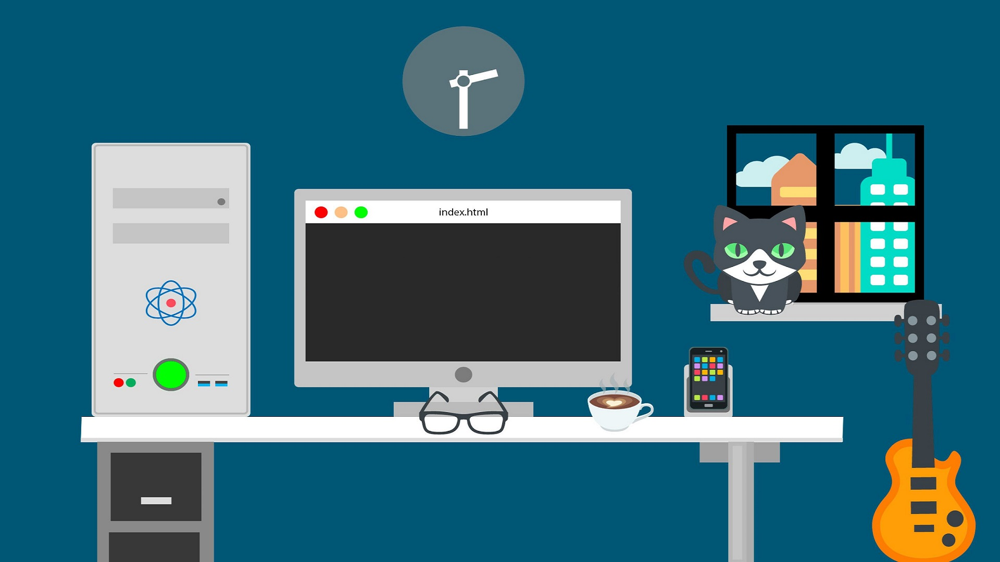
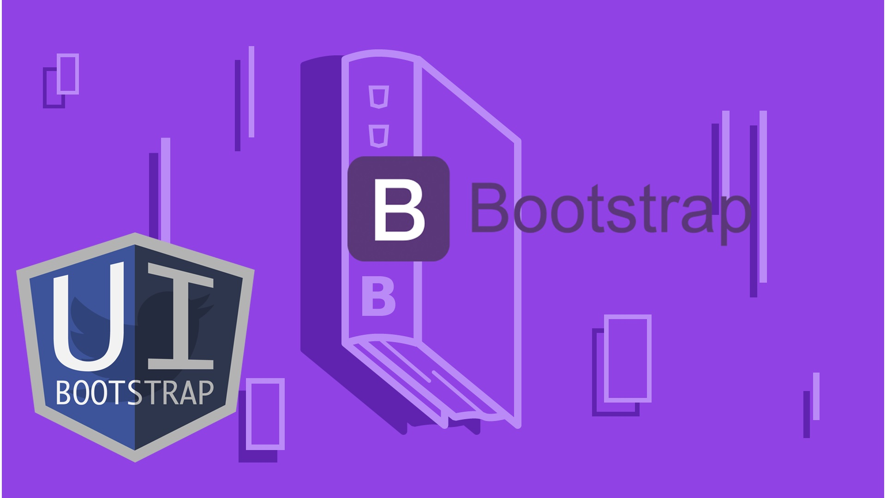

Responsive & Professional Website Development
Our vetted website developers will create a customized website to achieve all of your business goals.
Great experience in the main javascript framework
We have experience in the main javascript frameworks: Angular, React, Vue.js.

We can build fast and responsive sites
Quickly design and customize responsive mobile-first sites with Bootstrap.
